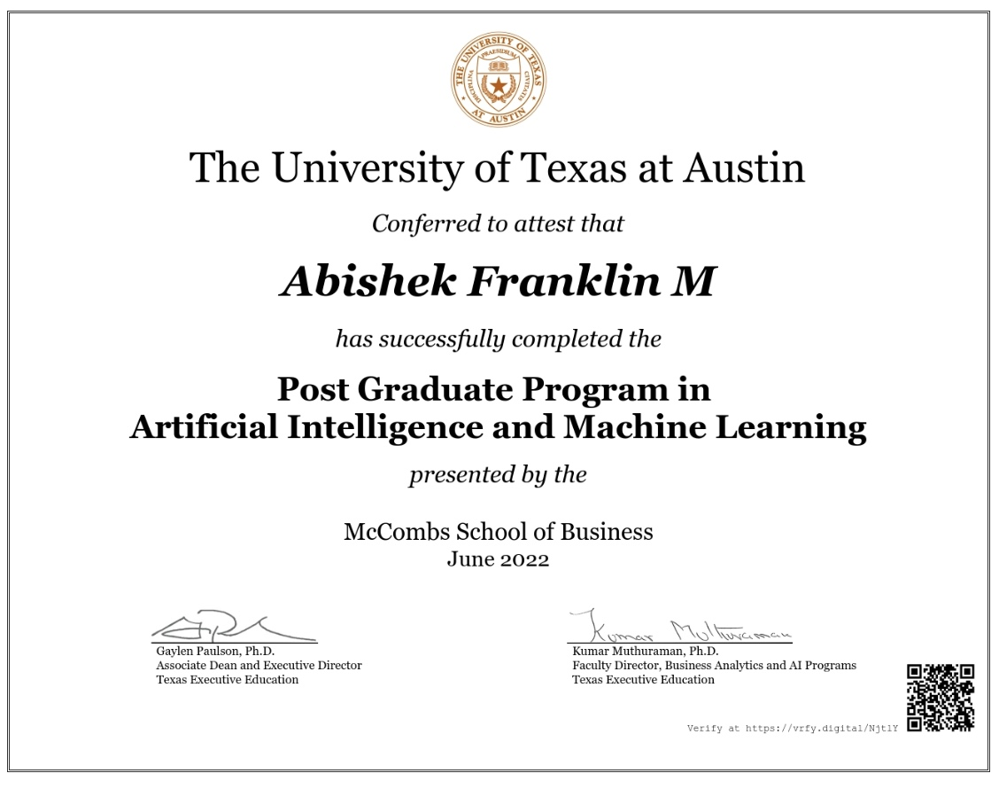
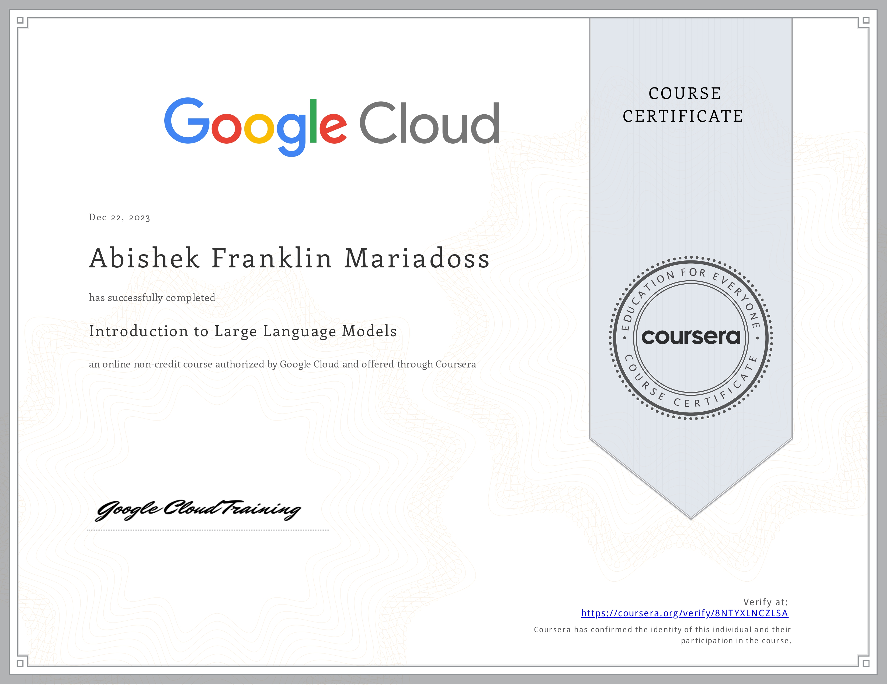
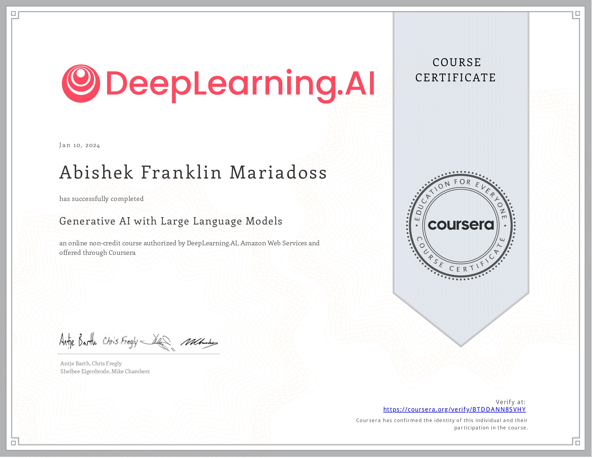

SUMMARY
Versatile data enthusiast who combines a good theoretical foundation with realworld industrial knowledge. Capable of making data-driven decisions, with a track record of collaboration and leadership in a variety of team settings that demonstrates great interpersonal abilities.
EDUCATION
| Master of Science, Computer Science | Jan 2023 - Till Date |
| University of South Carolina | GPA : |
| Bachelor of Technology, Electrical & Electronics Engineering | June 2014 - April 2018 |
| Amrita Vishwa Vidyapeetham | GPA : |
PROFESSIONAL EXPERIENCE
| Optum - UnitedHealth Group - Associate Data Engineering Analyst | Sep 2020 - Jan 2023 |
- Owned a stand-alone auto-ticket creation automation developed in Python using various APIs for monitoring the extraction process, that performed about 99% accurate with the actual missing data validation.
- Owned and maintained an internal file receival monitoring tool, providing support and updates.
- Collaborated with clients to address data-related challenges and accommodate extraction modifications.
- Served as a Subject Matter Expert for the 835 & 837 files (patient claim information). Also, presented a client-facing Reference Guide for the Monitoring Tool.
- Worked on ETL (Extract, Transform and Loading) process of all the PHI and financial files. Addressed various gaps with client on data level user issues.
- Developed a Python script for comparative validation of files between SVN & GitHub. Along with that contributed to a migration project that replaced the outdated AQT tool with Python.
- Utilized various tools, including AQT (SQL), GitHub, Jenkins, Unix (putty), Rally, JIRA, Python (JSON files), Database & Virtual Systems, PowerShell, batch, and gained proficiency in utilizing AWS tools.
| Mu Sigma, Inc - Trainee Decision Scientist | Jun 2018 - Jul 2018 |
- Performed Exploratory Data Analysis (EDA) by pre-processing and cleansing the data & Data Exploration for the Model Selection.
- Selection of null and alterante hypothesis and performed Hypothesis Testing for identifying p-values for various models.
- Performed Sentiment Analysis of customer text data and improved the performance strategy by almost 10%.
- Data Visualization of Statistical data over the predictions.
- Identified the best campaign strategy for Johnson & Johnson pharmaceuticals with a success rate of 11.62%.
CERTIFICATIONS
|  |  |  |
 |
 |
RESEARCH & PROJECTS
| University of South Carolina - Graduate Teaching Assistant | Aug 2023 - Till Date |
- Instructed a lab course on python fundamentals like datatypes, conditional executions, loops, functions, modules and scopes usages using Turtle.
- Educated and trained undergraduate students on file handling, Object Oriented Programming and few other packages.
- Mentored students in developing a project and graded their weekly lab assignments.
| Research Works : |
- Recently working on Large Language Models, using Language Models to fine tune and develope a model for material science using the research papers.
- Worked on Pneumonia detection on Computer Vision using Deep Learning by tweaking the architectures of U-Net, DenseNet121, and CheXNet, and optimized the efficiency to 93%.
- Mastered C# programming from the Capgemini experts with hands on real-world project in developing a back end using the .NET framework for an online store.
- Currently working under Professor Dr. Jianjun Hu on the image processing terahertz imaging of breast tumors “Terahertz Imaging and Characterization Protocol for Freshly Excised Breast Cancer Tumors” developed by University of Arkansas.
- Presented a paper on Hierarchical Control of Community Grid for Residential Houses at INDICON 2018, 15th IEEE India Council International Conference organized by IEEE Madras at Amrita Vishwa Vidyapeetham, Coimbatore.